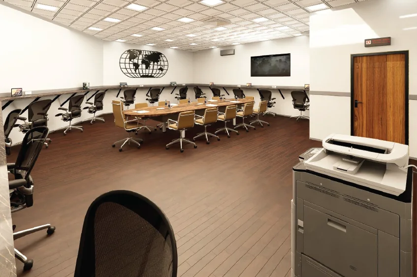
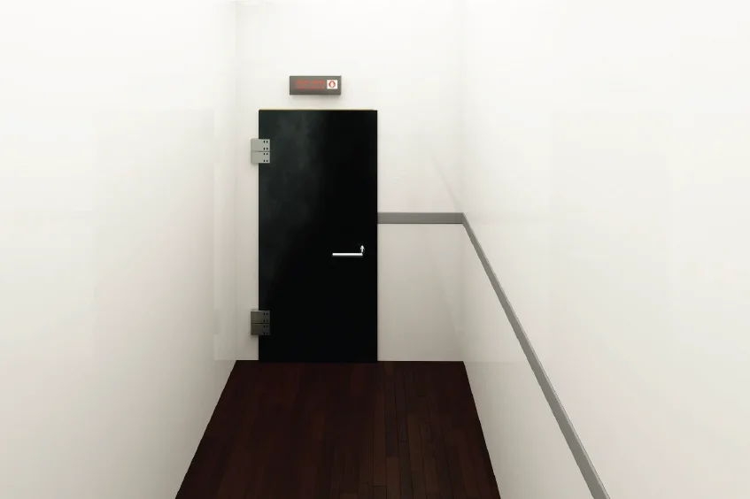

Forensic Faraday rooms and evidence boxes for cyber security
Isolate phones, tablets and laptops from Wi-Fi, Bluetooth, 4G and 5G so that digital evidence stays exactly as it was seized.

Forensic (cyber security) shielded rooms
Forensic shielded rooms work on the Faraday cage principle of a six-sided metal enclosure. They provide a controlled environment, free from electromagnetic interference and ambient RF signals entering or leaving the room.
That makes them a suitable location for examining electronic devices without any risk of the device reaching Wi-Fi, Bluetooth, or a 4G or 5G connection.

Forensic evidence (cyber security) box
The forensic evidence box is a portable shielded enclosure designed with law enforcement in mind, delivering over 100 dB of shielding. It is engineered so that securing and protecting a mobile phone is simple and repeatable every time. The box can only be opened and closed one way, and closes securely to make sure the shield is complete.
Any device inside is protected from file transfer, remote wipe commands, Find My and GPS tracking, which completely isolates it and preserves the evidence.
What isolation prevents
Every wireless path to the device is closed, including device-to-device links.
Remote wipe and file transfer
Commands that could erase or alter data cannot reach the device.
Location tracking
Find My and GPS tracking are blocked, so the device cannot report where it is.
Device-to-device connections
Bluetooth, AirDrop-style file transfer and Wi-Fi links to other devices are stopped.
Cellular and satellite
Cellular / GPRS and low Earth orbit satellite connections cannot be established.
Who uses forensic shielding
- Police and law enforcement agencies
- Digital forensics laboratories and investigators
- Government and security departments
- Corporate security and incident response teams
Working away from a fixed site? See our shielded containers and shielded tents for mobile forensic spaces.
Frequently asked questions
Why isolate a seized phone from the network?
A phone that can still reach a network can receive remote wipe commands, sync or overwrite data, and report its location. Placing it in a shielded enclosure blocks Wi-Fi, Bluetooth, cellular and GPS signals so that the evidence is preserved as it was seized.
What is the difference between a forensic shielded room and an evidence box?
A forensic shielded room is a fixed Faraday-cage room in which investigators can work on devices. A forensic evidence box is a portable shielded enclosure for securing and transporting individual devices, such as mobile phones.
How much shielding does the evidence box provide?
The Shield Tech forensic evidence box delivers over 100 dB of shielding.
Can you provide shielding for field investigations?
Yes. Shielded containers and shielded tents allow forensic and security work to take place away from a fixed site. See our page on shielded containers and tents.

Tell us what you need to shield or test
Share your standard, frequency range, footprint and timeline. Our engineers will come back with a clear recommendation and a scoped quotation.